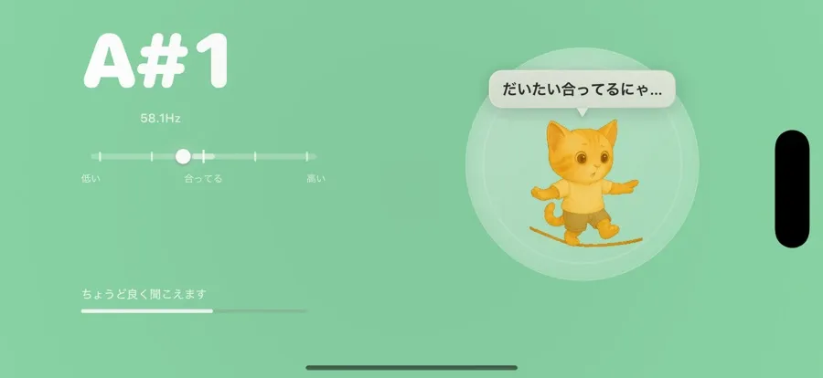
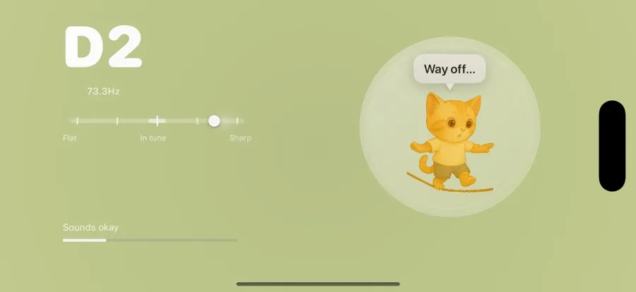

음이 낮을 땐 바늘이 왼쪽으로. 줄을 살짝 조여 주세요.
센트 단위 크로매틱 튜너
음 하나까지,
음 하나까지,
딱 맞게 냥
마이크에 소리만 들려주면 센트 단위까지 음정을 잡아줘요. 줄 위에서 균형 잡는 고양이처럼, 바늘이 가운데로 오면 딱 맞은 거예요.
- 센트 단위정밀 측정
- 대부분 악기기타 · 베이스
- 노이즈 필터가로 · iPad
A#1
58.1 Hz
낮아요딱 맞아요높아요
딱 맞았다냥! 🎵
🐱
가로로 넓게, 보기 편하게


바늘만 보면 한눈에 알아요
고양이의 표정이 곧 음정 상태예요. 가운데로 오면 완벽하게 맞은 거랍니다.
바늘이 가운데에서 멈추면 초록불, 완벽하게 맞았어요.
음이 높을 땐 바늘이 오른쪽으로. 줄을 살짝 풀어 주세요.
소리만 들려주면, 나머진 냥냥이
-
01
마이크 켜기
앱을 열고 악기 가까이에서 마이크를 켜 주세요.
-
02
한 음 들려주기
줄을 하나씩 튕기면 음 이름과 Hz가 실시간으로 떠요.
-
03
가운데로 맞추기
바늘이 가운데, 고양이가 활짝 웃으면 조율 완료!
귀엽지만 진지한 정확도
-
실시간 음정·피치
마이크로 들어온 소리의 음과 Hz를 바로 보여줘요.
-
센트 단위 정밀
크로매틱 방식으로 센트 단위까지 정확히 측정해요.
-
대부분 악기 지원
기타·베이스를 비롯한 다양한 악기를 조율해요.
-
노이즈 필터 · 가로
시끄러운 곳에서도 안정적으로, iPad·가로 모드까지.
오늘 연주 전에,
한 번 맞춰볼까요?
조율이 잘 된 악기는 연습이 즐거워집니다. 냥냥 튜너와 함께 음 하나까지 딱 맞게, 기분 좋게 시작해보세요.